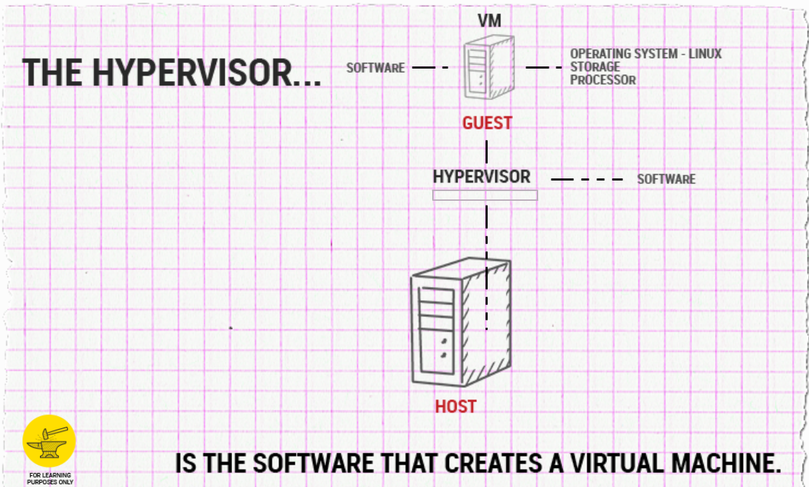

Virtualization is essentially the ability to create a computer within a computer. This "computer" acts as a separate system with a separate Operating System, processor, and memory, only in a virtual machine environment. The hypervisor is the software or firmware that creates and manages virtual machines (guests) running on the physical machine (host). Virtualization is more cost and resource effective because it allows you to run many applications on one server, as opposed to running one application per server as shown in Figure A above.
